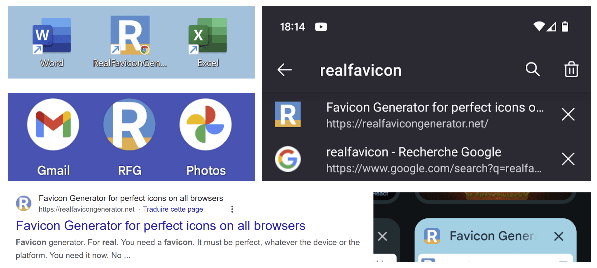

Favicon generator. For real.
All browsers
All platforms
Drop your favicon image here
No hard decision
With so many platforms and icons, it's hard to know exactly what you should do. What are the dimensions of favicon.ico? How many Touch icons do I need? RealFaviconGenerator did the reseach and testing for you.Done in 5 minutes
You spent hours on design, colors, graphics... How much time left for the favicon? Probably not much. But no worries, you only need a few minutes to tackle this task.SVG favicon
RealFaviconGenerator supports all plateforms that matter. iOS, Android, desktop... It even generates the latest SVG favicon format to make your site future-proof.Instant feedback
How will Android display my icon? How will iOS round my Touch icon? No more guesswork. RealFaviconGenerator instantly shows you how your icons will look like.Favicon for Google
Google loves icons, and they are a great way to make your sites look good on search results. Good thing RealFaviconGenerator instantly shows how your favicon will look like.So easy
RealFaviconGenerator not only creates your icons, it also generates the corresponding HTML markups along with clear instructions to setup your favicon and even a favicon checker.Favicon checker
Whether you've just created a new favicon and want to make sure it's perfect, or you're troubleshooting an issue and need to understand why something isn't working, our favicon checker can help. See how your favicon appears on different platforms and get detailed technical insights.
Favicon: the reference
Not just a favicon generator. This is all you need to know about favicon. Our guides act a reference material and help you learn about all aspects of favicons.
What is a favicon
The favicon is this little icon in the tabs of desktop browsers.
Simple enough! However, this is not the full story. The favicon has several more usages dependiing on the browser, platform and device.
For example, the favicon is not visible when visiting a website from Android Chrome... But it is when Chrome displays miniatures of the opened sites for picking one.
In addition to the classic "e;tab"e; icon, the favicon servces other purposes. The most common one is to acts as a high resolution icon for mobiles devices when creating a shortcut to a website on the home screen.
Since a few years, the favicon is also used by Google and most search engines in their result pages.
Why your site needs a favicon
A favicon has a lot to do with branding. It is often the first element a visitor sees. Because the favicon is the logo of website, this is a first great opportunity to make a good impression. Even it the visitor leaves after just a few seconds, he will probably have noticed the favicon.
This is especially true since the appearance of the favicon in the Google result pages: someone can see the favicon of a website without even visiting it.
Understanding favicon elements
With so many usages, it is no surprise that a favicon is not just a single image, as it used to be when it was first introduced.
The PNG and SVG favicons are the must important ones nowadays. With these two formats, the favicon appears in browser tabs and Google result pages.
The Apple Touch icon is another must have, because it serves as the "e;high resolution"e; icon. It is obsiously used by iOS, but also by Android if there is no web app manifest. This icon serves as a shortcut icon on the home screen of mobile devices, but is also grabbed by spiders to represent the website in lists, etc.
What about the old favicon.ico? It is no longer useful, expect for one specific case: when a visitor is viewing a PDF (eg. https://example.com/some.pdf), the browser will look for https://example.com/favicon.ico to display it in the tab.
Favicon history
The favicon was first introduced by Internet Explorer 5, in 1999. It was a 16x16 pixels icon which was displayed along with bookmarked pages. Thus the "e;favorites icon"e; name.
Another important milestone in the history of favicon was the introduction of the Apple Touch icon. This was in 2007, with the release of the first iPhone. At that point, a single image file was not enough anyore.
The main favicon format is now the SVG, supported by all modern browsers.